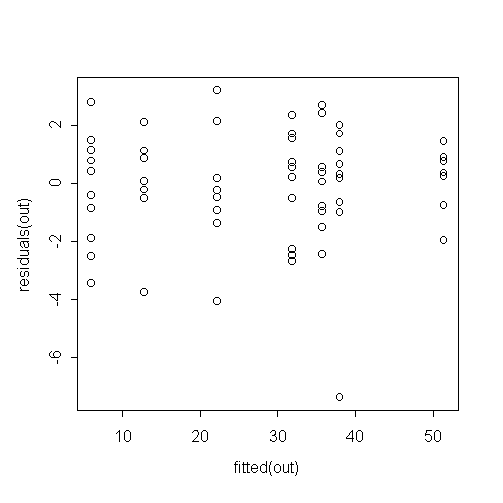
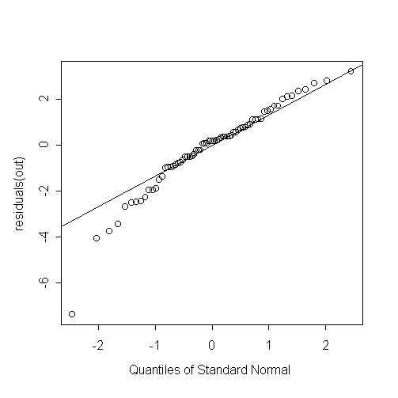

| / Home |
Keywords: Poisson distribution, overdispersion, outlier
The data was collected as part of the Australian bovine tuberculosis eradication campaign. Suitably treated bovine tissue was placed on culture plates and examined for the growth of colonies of Mycobacterium bovis. Material for culture was decontaminated prior to inoculation onto culture media. The data describe number of M. bovis colonies found on culture plates at stationarity (about 12 weeks after inoculation) when 1-hexadecylpyridium chloride (HPC) decontaminant was applied in varying concentrations. It is of interest to find the highest possible HPC concentration which does not kill too many M. bovis colonies.
| Variable | Description | ||
| HPC | HPC concentrations in % weight / volume | ||
| Colonies | Number of M. Bovis colonies on the plate at stationarity | ||
Trajstman (1989) described the background to the problem as follows:
At the Commonwealth Scientific and Industrial Research Organisation (CSIRO) Division of Animal Health diagnostic procedures are being developed that will eventually lead to the formulation of a standard approach for the conduct of the Australian bovine tuberculosis eradication campaign. In particular, interest lies in recommending laboratory procedures for the primary isolation of Mycobacterium bovis (M. bovis) from bovine lesions .... Typically the procedure involves placing suitably treated bovine tissues on culture plates and waiting to see whether M. bovis colonies appear. M. bovis is a slow growing bacterium and because of this slow growth it is possible for contaminating bacteria to overgrow the cultures. To prevent this, material for culture is decontaminated before inoculation on to culture media. Decontaminants work by killing the contaminating organisms. Unfortunately decontaminants can also kill the organism of interest, M. bovis. If the decontaminant is too concentrated there will be no contamination but also there will be so surviving M. bovis. However, if the decontaminant is not sufficiently concentrated then M. bovis will grow well and so will the contaminating organisms. The problem is to select a decontaminant at an appropriate concentration that leaves a many as possible culture tubes uncontaminated while at the same time kills as few as possible M. bovis organisms.
There are two subtleties to the data which are described by Trasjstman (1989). The first is that the maximum number of colonies at stationarity is essentially determined by the initial number of M. bovis colony forming units placed on a plate. The exact number of units placed on each plate is unknown, but technicians attempt to place about 50 units on each plate used in the experiment. The second is that HPC has a detergent action. At larger concentrations it may lead to a slight over-counting of the number of colonies by dispersing larger colonies into smaller clumps.
Data file (tab-delimited text)
| Morgan, B. J. T. (1992). Analysis of Quantal Response Data. Chapman and Hall, London. Example 1.9. |
| Trajstman, A. C. (1989). Indices for comparing decontaminants when data come from dose-response survival and contamination experiments. Applied Statistics 38, 481-494. |
Both Trajstram (1989) and Morgan (1992) treated observation 61 as an outlier. Trasjstram (1989) treated the counts as binomial with unknown n, while Morgan (1992) treated the data as overdispersed Poisson.
This data is interesting because it is highly overdispersed relative to Poisson, but still appears to have a linear mean-variance relationship. In particular the data clearly is not negative binomial.
> out <- glm(Colonies ~ HPC+as.factor(HPC), family=poisson)
> anova(out)
Analysis of Deviance Table
Poisson model
Response: Colonies
Terms added sequentially (first to last)
Df Deviance Resid. Df Resid. Dev
NULL 69 808.6723
HPC 1 551.8116 68 256.8606
as.factor(HPC) 5 32.8789 63 223.9817
> sum(out$weights*out$residuals^2)
[1] 189.2474
> plot(fitted(out),residuals(out))
|  | Note that there is no tendency for the residuals to become more variable
as the fitted value increases.
It is not appropriate to fit a negative binomial model in which the variance is assumed to increase quadratically with the mean. |
> qqnorm(residuals(out)) > qqline(residuals(out))
|  | One clear outlier and possibly several. Or else the count distribution is skew to the left relative to the Poisson distribution. |
|
Home - About Us -
Contact Us Copyright © Gordon Smyth |